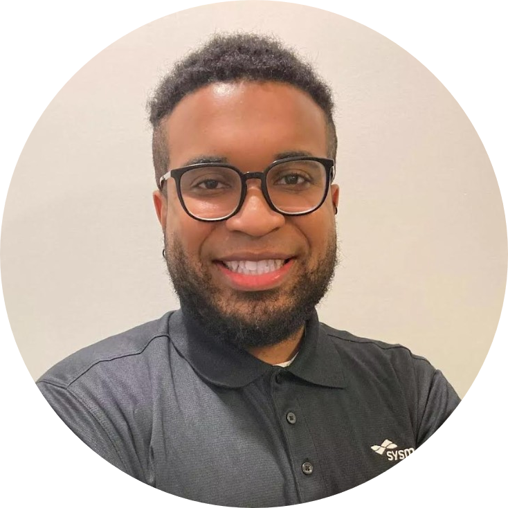

|  |
Kevin Colon
Service Engineer I for Sysmex America
. Working towards becoming a
Software Developer
Prior to my career with Sysmex, my interest led me into Medical Technology. A field where I applied
myself deep into the studies of the cellular world and how it all works to keep us going every day. Having a
great deal of drive, energy and embracing challenges, I found myself in a position as a Medical Laboratory
Scientist. All my tasks throughout the day made a meaningful impact on a patient's health and outcome.
During this time, I took my Hematology ASCP certification to solidify my foot into this career.
I am not afraid to take risks and as a result along with passion and ambition for learning and
expanding I ventured into the wide world of Technology where I decided to make the switch over
to the Service Engineer field with Sysmex. Outside of my work, I am currently partaking in a coding bootcamp
called "100 Days of Code" taught by Dr. Angela Yu. |